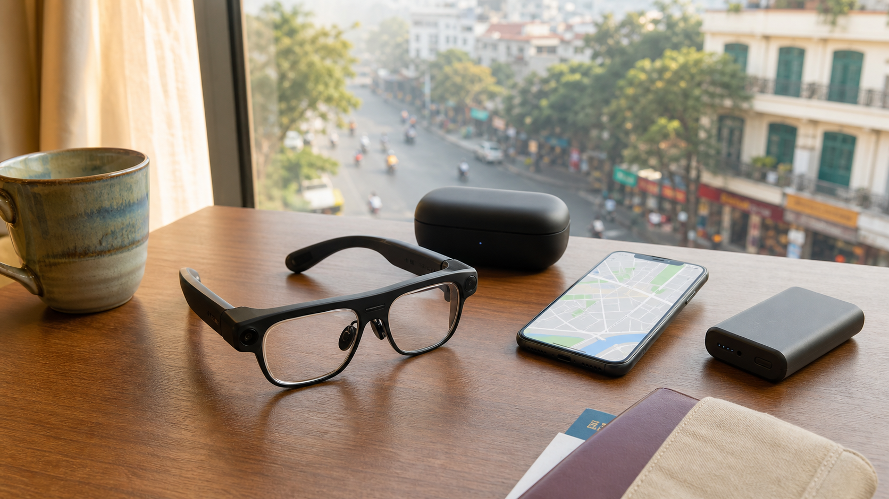

AIスマートグラスを紹介するニュースが増え、翻訳、撮影、AIガイドを旅先で使える製品も登場しています。2026年8月には、旅行者向けを掲げるスマートグラスの実機レビューも公開されました。
便利そうなのは間違いありませんが、このブログではすでに、公開済みの「普通の眼鏡にAIが入る。『Meta Glasses』は旅の相棒になるのでしょうか」で、製品の機能、価格、プライバシー、日本での販売状況を扱っています。そこで今回は製品紹介を繰り返さず、ベトナム旅行へ持っていく前に確認したい実用項目に絞ります。
翻訳は使いたい場面まで確認する
「ベトナム語対応」と書かれていても、看板を読む機能と、会話をリアルタイムで訳す機能は別の場合があります。屋台のメニュー、ホテルの受付、タクシーでの行き先確認など、自分が使いたい場面を決めておくことが大切です。
雑踏ではマイクが声を拾いにくく、料理名や地名の訳が不安定になる可能性もあります。料金やアレルギーの確認は、文字を相手と一緒に見られるスマートフォンも併用したいところです。

ナビは表示方法とオフライン動作を確認
音声だけで曲がり角を知らせるのか、視界に矢印を表示できるのかで体験は大きく違います。すべてのAIグラスがAR表示に対応するわけではありません。対応都市、スマートフォンとの接続、位置情報の精度、オフライン時の動作を出発前に試しておきましょう。
ハノイやホーチミンでは交通量が多く、歩道にも段差があります。案内を聞くことに集中しすぎず、目の前の安全を優先する必要があります。
撮影は相手と場所への配慮を優先
両手を空けたまま旅の景色を残せるのは魅力です。市場を歩く瞬間や料理が運ばれてくる場面は、スマートフォンより自然に記録できそうです。
一方、相手からは撮影中か分かりにくいことがあります。録画ランプが付く製品でも、人物を撮る前には一声かける。寺院、店内、空港、入国審査周辺では現地の規則や施設の案内を優先する。ブログやSNSへ載せるなら、写り込んだ人や位置情報にも配慮したいです。
バッテリーは自分の使い方で判断
バッテリーは製品欄の「最大」時間だけでなく、自分の使い方で判断します。翻訳、動画撮影、通話を続ければ使用時間は変わります。朝から夜まで観光するなら、充電ケースやモバイルバッテリーが必要か確認しましょう。
飛行機では予備電池やモバイルバッテリーの扱いに規則があります。利用する航空会社の最新案内も出発前に確認します。
本体以外の費用も合計する
価格については本体だけでなく、度付きレンズ、保証、修理、AI機能の利用料まで合計したいです。海外モデルでは、日本で使える機能やサポートが限られる場合があります。現地通信が必要ならeSIMの容量も費用に加わります。
眼鏡として長時間かける以上、重さ、鼻や耳への当たり、発熱、雨への強さも、店頭や返品条件のある販売先で試したいポイントです。
出発前の確認リスト
- 必要なベトナム語翻訳が使えるか
- スマートフォンとの接続とオフライン時の動作
- ナビが音声案内か、視界内表示か
- 撮影中であることを周囲へ分かりやすく示せるか
- 一日の利用に必要な充電ケースと予備電源
- 度付きレンズ、保証、AI利用料、通信費を含む総額
- 普通の眼鏡、スマートフォン、旅程の控えを残したか
ろぶーの結論
AIスマートグラスを「旅行を全部任せる機械」ではなく、「スマホを取り出す回数を減らす補助役」と考えるのがよさそうです。
翻訳、ナビ、撮影のうち最優先の機能を一つ決める。出発前に同じ騒音や通信条件を想定して試す。そして普通の眼鏡、スマートフォン、紙やスクリーンショットの控えも残す。そこまで準備できれば、ベトナム旅行で新しい景色の見方を試せそうです。
参考情報
記事内容は2026年9月1日時点で確認しました。製品ごとに対応言語、機能、販売地域、利用料が異なるため、購入前に各メーカーと航空会社の最新案内をご確認ください。